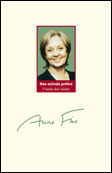
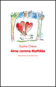
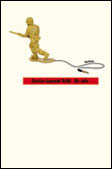
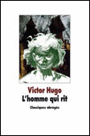
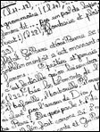

instantanément téléchargeable dans l'Espace Abonnés

Propositions de lecture et d'écriture, par Françoise Camus-Deharbe
Comme chaque début d'année, l'École des lettres propose aux professeurs de collège ainsi qu'à leurs élèves de partir à la rencontre d'un écrivain de littérature de jeunesse : cette fois, il s'agit d'Anne Fine, connue du grand public pour ses romans pour les adultes comme pour ses récits destinés à un jeune public.

Lecture cursive
Ce bref roman de Sophie Chérer, plutôt destiné à la classe de CM2 ou au tout début de la sixième, se situe aux frontières du réel et de l'imaginaire. L'action ne constitue pas l'intérêt essentiel du livre, même si les dialogues, nombreux, permettent d'introduire des narrations - la rencontre des parents de Mathilde, par exemple.

par Norbert Czarny
Oskar et son frère Jeremy vivent dans une bourgade américaine jamais nommée. Une petite ville comme beaucoup d'autres, avec ses usines qui ferment, son centre qui n'en est pas un, ses hivers neigeux et ses étés chargés d'orages. Jeremy a dix-huit ans et, un jour de juillet un peu plus chaud que les autres, alors qu'il achète à boire au supermarché du coin, deux agents recruteurs lui font signer un papier.

Le roman d'un proscrit
De l'œuvre romanesque de Victor Hugo, les élèves connaissent, de réputation du moins, Les Misérables ou Notre-Dame de Paris. Étudier L'homme qui rit en classe de quatrième ou de troisième offre, outre la découverte d'un roman méconnu, l'occasion de faire la connaissance du personnage attachant de Gwynplaine et d'aborder l'œuvre hugolienne à travers ses thèmes de prédilection, son écriture et son contexte historique.

Maîtrise de la langue
Le nouveau projet de programme d'avril 2008 accorde une large place à l'enseignement de l'expression écrite. Une présentation d'ensemble pour les différents cycles du collège établit un lien direct entre les activités d'écriture et l'observation des faits de langue : « C'est par une pratique régulière, continue et variée de l'écriture que les élèves peuvent acquérir une conscience claire de leur langue, une connaissance précise et vivante de son fonctionnement, de ses modes de production et de ses effets. »

Éducation à l'image et aux médias
Dans le préambule du projet de programme de français pour le collège, les rédacteurs signalent que ces programmes « contribuent à l'acquisition de grandes compétences définies dans le socle commun de connaissances et de compétences », notamment dans le pilier 6, « Les compétences sociales et civiques ».

Témoignage
Une inspection, c'est d'abord de la route et du temps pour penser. Des champs à perte de vue, des cultures ondoyantes, du blé, de l'avoine, du maïs... Dans ces espaces sans bornes et sans hommes où la nature engloutit les villages et les bourgs, la littérature est un luxe qui ne tente personne. Dans un train, j'observe les distractions de chaque âge : les enfants et leur console de jeux, les ados et leur portable, les adultes et leur ordinateur...

Donnez-nous votre avis sur courrier@ecoledeslettres.fr
</div>